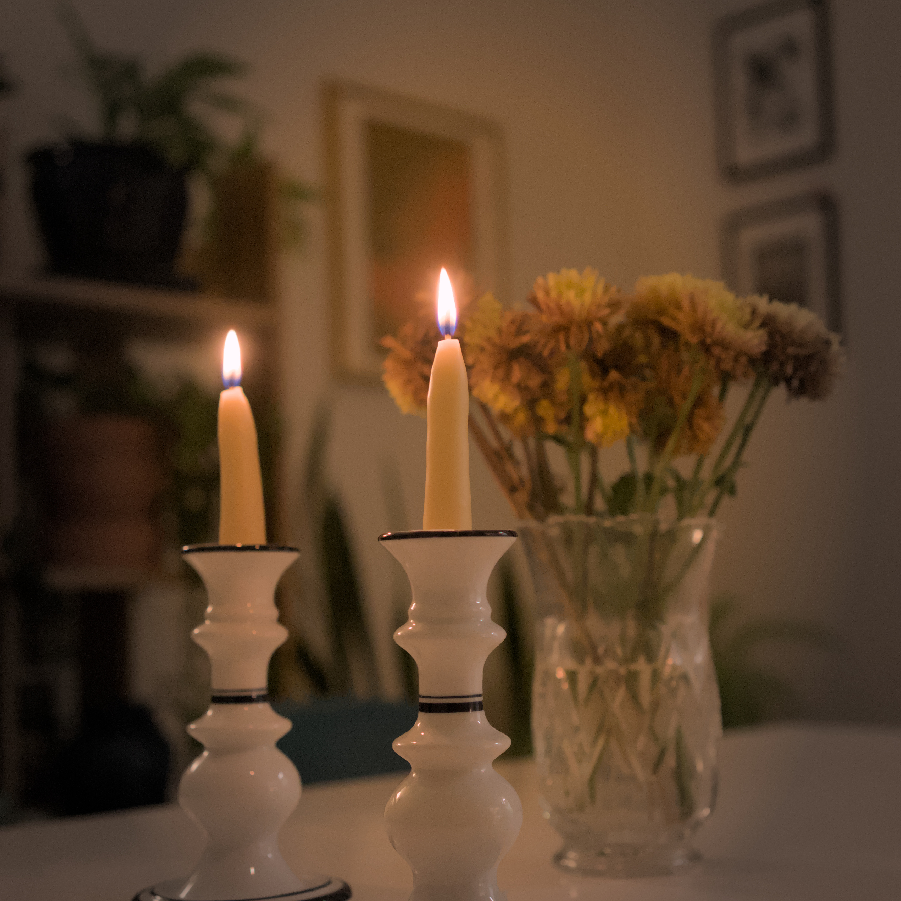

Beeswax Candles (Dip)
For Sequoia Fabrica, I'm running a candlestick making class. I'm not an expert at this, but like most things in life, you just need to be one page ahead in the book to explain to others what is going on. These are my notes on candlestick making.
Prerequisites
You will need:
- [ ] A burner (induction for portability)
- [ ] Large boiler
- [ ] 4 Deep jars (alternatively, a double boiler and 2 jars)
- [ ] Scissors
- [ ] Cotton wicks
- [ ] Beeswax (2-3lbs)
- [ ] Cold water
- [ ] Washers or bolts (any small scrap of metal you can tie a string around)
Steps
- Heat the wax in a double-boiler style. If you don't have a double boiler, just fill jars with wax and place in a pot full of water. Beeswax melts at 144 to 147 °F, keep this in mind while melting. Low and slow is better, so try not to exceed the temperature significantly. I think as long as the water is not at full boil, you should be in a good range.
- Once the wax is fully melted, prepare a container, or a couple jars with cold water. Don't make it too cold, because that will cause issues later. Get some tap water, add one or two ice cubes.
- Now, cut the string to be twice the depth of your melted beeswax, plus an extra 15-20cm. Tie to each end a couple washers. Since wax floats in water, this will help it sink.
- Now you start dipping. This is the repetitive part. Dip in the hot wax, let it drip off, dip in the cool water, let it drip off. Then repeat.
- Continue step 4 until you have your desired candle size. The final candle should be between 18-20mm in diameter to fit in most candlestick holders. You can measure this with a calipers, or mark a string at a 56.5mm ($\pi \times 18$), and wrap around the candle.